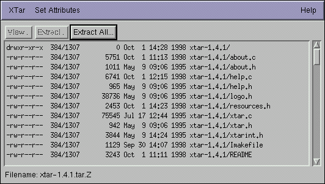
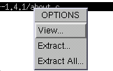

The main window for XTar shows you the contents of the open tar archive. The toolbar across the top enables you to quickly view or extract selected file(s) from the archive or extract the entire contents of the archive to disk.
The status bar across the bottom displays the currently open file, if any.
The main listing shows files in a similar style to the UNIX long listing format. Columns from left to right are: file permissions, user ID/group ID, file size (in bytes) date stamp and filename.
Click on an entry to highlight a file in the list. Hold down the shift-key and select files to select a contiguous block of files or hold down the ctrl-key and select files to select a non-contiguous block.
File Operations

Selected files can be viewed or extracted by selecting the appropriate action in the toolbar or via the options menu - activated by clicking the right mouse button inside the main window.
View..., applies to files in the tar archive. Selected files are displayed using either the internal viewer or an appropriate external program. Files are mapped to external programs using the XTar mappings resource - you can configure an external program to launch depending on the filename ending.
Extract..., allows you to extract selected files & directories. A file dialog box appears and you are prompted for a location to save the selected files to. Note: if you select only one file, then the file will be saved to the location you choose without its full pathname; if you select more than one file then the files will be saved with their full pathname.
Extract All..., allows you to extract the contents of the entire archive. A file dialog box appears and you are prompted for a location to extract the archive to.